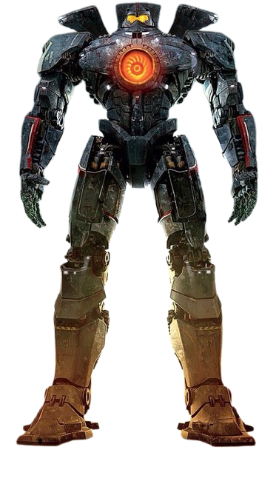
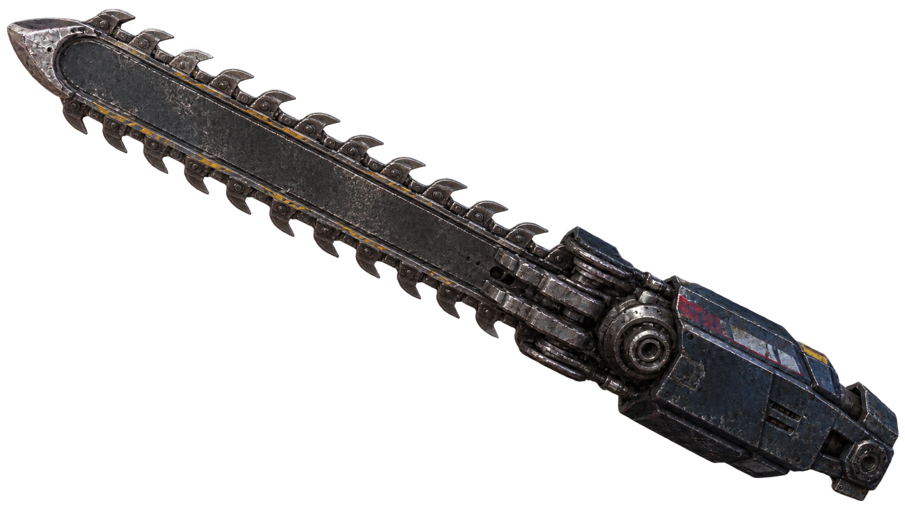
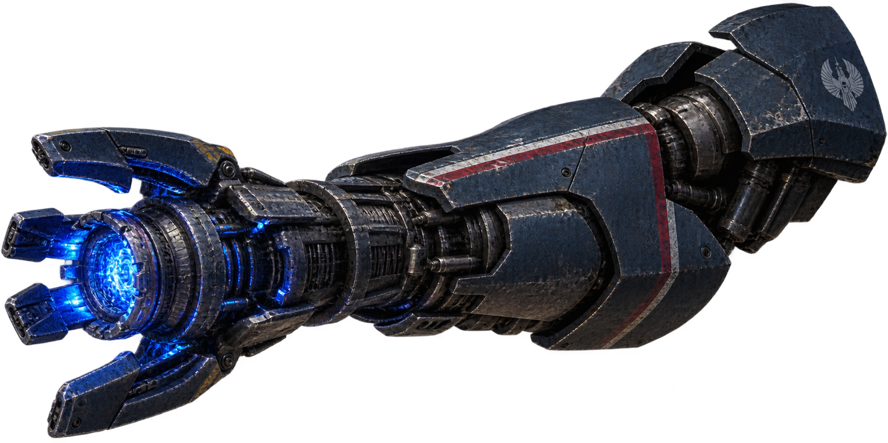
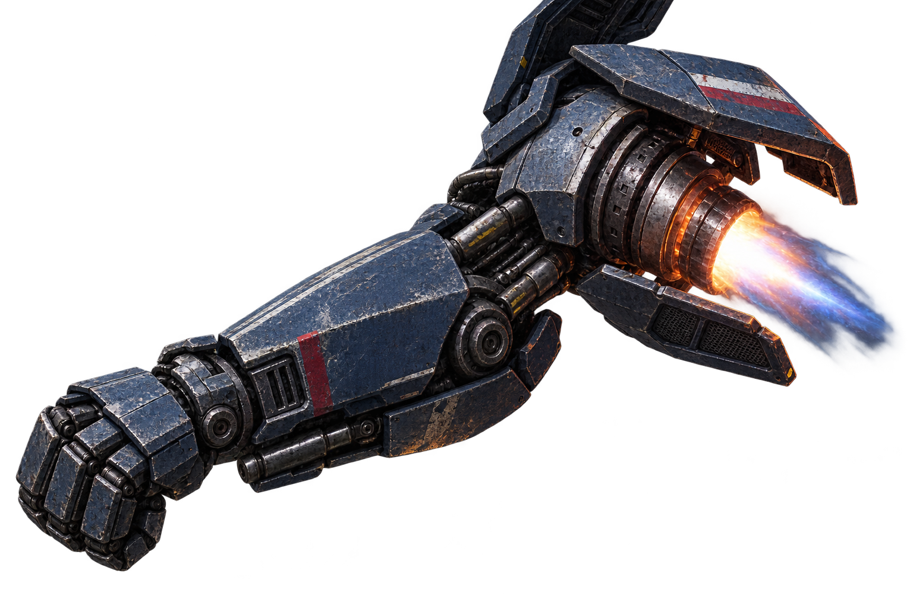

Senjata jarak dekat Gipsy Danger yang digunakan untuk menghadapi Kaiju dalam pertarungan jarak dekat.

Senjata energi yang terpasang pada lengan Gipsy Danger dan digunakan untuk memberikan serangan plasma berkekuatan tinggi.

Sistem pendorong yang terpasang Pada bagian siku Gipsy Danger. Menggunakan semburan tenaga untuk meningkatkan gaya dorong saat melakukan pukulan,sehingga menghasilkan serangan yang lebih kuat terhada kaiju.